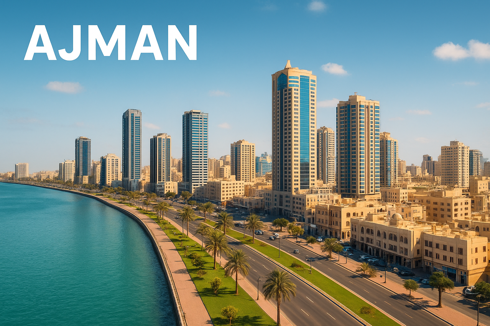

Investors
Ajman’s Free Zone is driven by foreign investors, especially from India, Pakistan, and Egypt. UAE-based investors are also rising post-2020.

Residents
The same nationalities leading investment are also the most common among Ajman’s residents, showing alignment between economic and social presence.

Graduates
Non-local students make up over 90% of graduates, especially in bachelor’s degrees. Female graduates lead in numbers, and master’s degrees are slowly increasing.